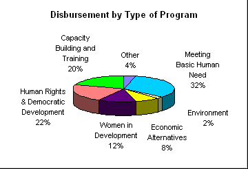

Primate’s World Relief & Development Fund
(Continued) Report to General Synod
Partnerships with Dioceses and Parishes
Over the past triennium PWRDF has worked to strengthen
partnerships with parishes and dioceses. The goal was to enable parishes to see the
ministry of PWRDF as an extension of outreach beyond the borders of their parish. PWRDF
undertook a number of initiatives.
The Offering Envelope Program invited parishes to
include PWRDF in their parish stewardship programs by including twelve PWRDF envelopes in
their regular offering boxes. Over 500 parishes are participating in this program and
finding that both awareness of, and contributions to, PWRDF are increasing.
PWRDF made efforts to improve communications with
parishes by encouraging the appointment of parish representatives for PWRDF and by
distributing a newsletter entitled "Under the Sun". There are PWRDF parish
representatives in over 900 parishes and the newsletter has been well received across the
country.
This network of volunteers is vital to the ministry
of PWRDF. In addition to the parish representatives 40 individuals serve as diocesan or
area PWRDF coordinators. There are 25 Diocesan Refugee Coordinators as well as the support
provided to PWRDF by parish envelope secretaries and treasurers. These volunteers are the
lifeline of PWRDF. The Refugee Coordinators met together in Vancouver in 1995. The PWRDF
diocesan coordinators gathered for a national "Making the Connections"
Conference in 1996. In 1997, the refugee and diocesan network coordinators met together
regionally in St. John’s, Montreal, Winnipeg and at Sorrento in British Columbia.
While fundraising is important, the PWRDF takes
seriously the mandate given to it in 1974 to implement a development education program for
the Anglican Church of Canada. Each year PWRDF produced educational resources including
resources for worship, a Sunday school and youth resource as well as adult bible
study/learning kits. In 1996 PWRDF distributed resources focusing on the Philippines. In
1997 the educational theme focused on the ecumenical theme "In Solidarity with
Uprooted People".
Actions of advocacy or solidarity with partners
overseas is an important way that Canadian Anglicans can express their partnership. Over
the triennium PWRDF encouraged people in parishes to express their concerns about
landmines, Cuba, Kenya, Asia Pacific Economic Cooperation (APEC), North Korea, the Sudan,
the Head Tax on immigrants and refugees and the decrease in levels of Canadian Official
Development Assistance.
PWRDF appointed a staff person as diocesan liaison
for each diocese. As part of a pilot project to base staff regionally, a staff person was
appointed to work more closely with the six dioceses in the ecclesiastical province of
British Columbia and another person was appointed to work with the Diocese of Toronto.
In the Diocese of Huron, the Huron Hunger Fund
continues to be the expression of PWRDF in the diocese and in the Diocese of Toronto,
PWRDF became a partner in the FaithWorks campaign.
The Full Report
|

Disbursement by type of program. Click to zoom in. |
{kind=link}